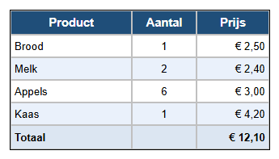

Leerpad › Les 2
Cellen opmaken

Eerst selecteren, dan opmaken
De knoppen op het tabblad  Cel (C) werken op de
geselecteerde cellen:
Cel (C) werken op de
geselecteerde cellen:
- klik op één cel;
- sleep met de muis over meerdere cellen;
- klik op een rijkop (1, 2, 3 ...) of kolomkop (A, B, C ...) voor een hele rij of kolom.
Zo maak je het zelf
- Open je boodschappenlijst uit les 1 (of het voorbeeld van les 1).
- De kop: klik op rijkop 1. Klik op Vet en Centreren, kies bij Celkleur donkerblauw, bij Tekstkleur wit en zet de Lettergrootte op 11.
- Aantal: klik op kolomkop B en klik op Centreren.
- Prijs: klik op kolomkop C en klik op Rechts uitlijnen. Zo staan de bedragen netjes onder elkaar.
- Afwisselende rijen: geef rij 3 en rij 5 een lichtblauwe celkleur. Een lange lijst leest zo veel makkelijker.
- Totaal: voeg met AR (tabblad Tabel) een rij toe, typ Totaal en het bedrag, en maak de rij vet.
Waarom uitlijnen?
Tekst lees je van links naar rechts, dus die lijn je links uit. Getallen en bedragen vergelijk je beter als de cijfers onder elkaar staan: die lijn je rechts uit. Korte waarden zoals een aantal mogen in het midden.
Opdracht
Geef de rij Totaal een lichtgele celkleur en zet het totaalbedrag in het rood. Maak daarna de naam Kaas cursief, omdat die nog niet gekocht is.
Oplossing
Klik op de rijkop van Totaal en kies bij Celkleur lichtgeel. Klik daarna alleen op de cel met het bedrag en kies bij Tekstkleur rood. Klik op de cel Kaas en klik op Cursief.
Werk je onder Linux? Open het voorbeeld dan zelf met Openen tabel designer: map
lessen, bestand les02-opmaak.htd.